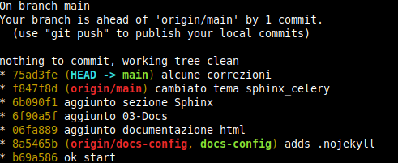
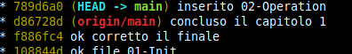
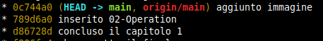

02-Operations¶
Prima di iniziare mettiamo in evidenza come si chiamano i vari puntatori:
HEAD indica l’ultimo commit attuale
origin e’ il puntatore del repository remoto
Se si hanno piu’ branch (es: main, docs-config) si vedranno piu’ puntatori:
origin/main
origin/docs-config
Se nel repository locale sono stati fatti aggiornamenti con commit
si potra’ vedere che i puntatori si troveranno disallineati
Sino a quando non aggiorneremo anche il repository remoto con push
Local¶
Di seguito le operazioni piu’ usate per operare nel repository locale
Add¶
Per aggiungere (tracciare) tutti i files presenti nel repository locale
Esempio:
$ git add .
Per tracciare tutto anche le directories:
$ git add - A
Per aggiungere un singolo file nel repository locale:
$ git add pippo.txt
Remove¶
Per rimuovere un file dalla gestione del repository:
$ git rm pippo.txt
Per rimuovere i files indicati dal tracciamento del repository locale:
$ git reset -- *.pyc
Commit¶
Per salvare le modifiche nel repository locale:
$ git commit -m 'first commit'
$ git commit -am 'first commit'
Per modificare l’ultimo commento del commit:
$ git commit --amend -m 'nuovo commento'
Per modificare N commenti dei commits.
Esempio HEAD~4 indica di considerare gli ultimi 4 commit a partire da HEAD:
$ git rebase -i HEAD~4
Posizionarsi sui commit che si vogliono modificare e sostituire pick con reword.
Salvare ed uscire
Ad ogni commit modificato verra’ proposto la modifica.
Reset¶
Per eliminare tutte le modifiche fatte in locale:
$ git reset --hard origin/master
Reset soft¶
L’opzione –soft cancella il commit ma lascia i files invariati.
Se ancora non è stato stato eseguito il push verso un repo remoto:
git reset --soft HEAD^
In Git:
HEAD è la commit più recente mentre
HEAD^ è la penultima
HEAD^^ è la terzultima.
In alternativa è possibile indicare l’SHA-1 dell’hash della commit alla quale si vuole tornare, qualunque essa sia:
git reset --soft 9fa5f6a
Il numero di hash di ogni commit è rintracciabile con un semplice git log –oneline
Reset hard¶
L’opzione –hard cancella il commit e ripristina anche i files.
Se volete riportare anche i files allo stato in cui si trovavano prima del commit:
git reset --hard HEAD^
Questo porterà “indietro nel tempo” il vostro repo, alla penultima commit. Sarà come se le ultime modifiche (e con esse l’ultima commit) non fossero mai esistite.
Branch¶
Per visualizzare il branch attuale:
$ git branch
Per visualizzare tutti i branch (anche quelli remoti):
$ git branch -a
Normalmente il ramo principale si chiama master.
Per creare una diramazione del progetto:
$ git checkout -b nuovoBranch
Per cancellare un ramo dal repository locale:
$ git branch -d nuovoBranch
Per cancellare un ramo dai repositories:
$ git branch -D nuovoBranch
Diff¶
Per visualizzare le modifiche effettuate sino ad ora rispetto al repository locale:
$ git diff
Per visualizzare le modifiche tra due branch:
$ git diff <branch_sorgente> <branch_target>
Show¶
Per visualizzare le modifiche in corso:
$ git show
visualizza le modifiche del commit passato:
$ git show 7c20a7
Stash¶
Se si vuole preservare una situazione di modifiche momentanea:
$ git stash
$ git stash push
Note
Equivale ad un create e uno store successivo.
Per ripristinare la situazione precedente:
$ git stash pop
Note
Equivale ad un apply e un drop successivo.
Per visualizzare lo stack (lista) degli stash:
$ git stash --list
Per visualizzare le modifiche dello stash in corso:
$git stash show
Checkout¶
Per ritornare ad un ramo:
$ git checkout nuovoBranch
- Per ritornare al ramo principale (cambia ramo)
(non sovrascrivere le modifiche locali non salvate):
$ git checkout master
- Per ritornare al ramo principale
(sovrascrive le modifiche locali non salvate):
$ git checkout -- .
Note
Con questo comando si perdono definitivamente le modifiche. Si puo’ usare il comando stash se si vuole preservare le modifiche in uno stack.
Per ritornare solo il file indicato:
$ git checkout -- <nomeFile>
Per ritornare ad una situazione identificata dal proprio ID:
$ git checkout 1b2e1d63ff
Tag¶
Per rendere piu’ tracciabile il punto di un commit:
$ git tag wrk.001
$ git tag v-1.0.0
per cancellare un tag:
$ git tag -d v-1.0.0
Log¶
Per visualizzare la lista dei operazioni eseguite:
$ git log
Per vedere un maggior dettaglio:
$ git log --oneline --graph --all --decorate
Remote¶
Quando si modifica il repository locale il puntatore HEAD -> main
Risultera’ disallineato rispetto al puntatore del repository remoto origin/master
Sino al successivo aggiornamento tramite il comando push
Push¶
Per salvare il contenuto tracciato nel repository locale sul repository remoto:
$ git push origin master
Se si vuole, ai successivi push, non indicare sempre origin master:
$ git push --set-upstream origin master
$ git push -u origin master
Dopo questo comando si devono vedere i puntatori allineati.
Per cancellare un ramo dal repository remoto:
$ git push origin --delete <branch>
Revert¶
Per rimuovere un push:
git revert HEAD
Questo comando crea un nuovo commit che annulla tutto ciò che è stato introdotto dal commit indesiderato.
Clone¶
Per creare una copia del repository remoto nel proprio Host:
$ git clone nomeutente@host:/percorso/del/repository nomeRepositoryLocale
Note
In assenza del nome del repository locale viene dato lo stesso nome del repository remoto.
Submodule¶
Per clonare i repositories inclusi nello stesso repository remoto:
$ git clone --recursive <url>
$ git clone --recursive https://github.com/espressif/esp-iot-solution
Se si vuole clonare o aggiornare in un secondo momento dal repository locale:
$ git submodule update
$ git submodule update --init --recursive
Per visualizzare i sottomoduli:
$ git git submodule
Fetch¶
Per recuperare l’ultima situazione dal repository remoto nell’area di lavoro attuale:
$ git fetch origin